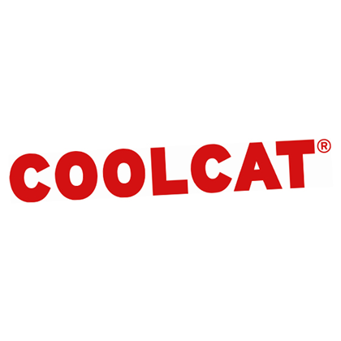
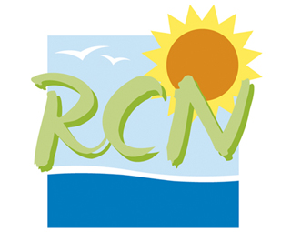
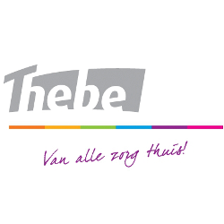
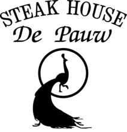

Weet ik dat zelf al wel? Laat ik me even voorstellen, Michel Leonard Fransiscus Schelfhout, aangenaam! 22 Jaar jong, geboren in Breda, wonend in Bavel.
Naast het feit dat ik in mijn vrije tijd meestal achter mijn computer verstopt zit en veel game, hou ik er ook vooral van om gezellig met vrienden en vriendinnen wat te drinken in het "Oh zo mooie en gezellige Breda" Behalve momenteel deze studie volgen heb ik ook nog een bijbaan bij het lekkerste Steakhouse in Breda, genaamd; De Pauw. Daar sta ik meerdere avonden in de week als een "kok" eten te maken voor de mensen die dat bestellen en als ik niet in de keuken sta dan rij ik in een auto rond om de mensen dit eten te bezorgen.
Ik herken mezelf als een gemotiveerde jongeman met een voorliefde voor computers, IT en alles wat daarbij hoort. Creatief en pragmatisch ingesteld. Kom uit een groot gezin met een jonger broertje van 20, een zusje van 19 en nog een broertje van 17. Natuurlijk zijn mijn ouders ook in beeld, al 24 jaar getrouwd en nog steeds elkaars beste vriend en verliefd alsof ze begin 20 zijn.
Na dat ik deze studie afrond en uiteraard behaal, zou ik graag door willen floreren in deze business en sector door middel van een HBO opleiding te volgen en nog meer te leren waarna ik de expertise kan toepassen in de praktijk.
Na dat ik mijn SDV (Sport, Dienstverlening en Veiligheid ), VMBO-Kader opleiding heb afgerond op het Van Cooth College in Breda heb ik de keuze gemaakt om "Mediavormgeving" te gaan volgen op het Radius College in Breda. Ik heb dit traject niet afgemaakt in verband met mijn motivatie die dusdanig gezakt was door
de simpele reden dat een stage niet te verkrijgen was. "Radius college? Nee sorry, die nemen wij niet aan."
Na dit debakel heb ik een jaar lang gewerkt en gezocht naar een nieuwe opleiding in een andere richting.
Mei, 2015 heb ik, met een warm hart, mijn Opa op zijn laatste dagen mogen mee verzorgen met de thuiszorg. Dit was voor mij een bijzondere ervaring met een onbeschrijfelijk gevoel wat ik met een diep respect heb ervaren. Alletwee mijn ouders zijn ervaren in de zorg en doen dit al heel hun leven. Voor mij was op dat moment duidelijk dat ik de stap naar de zorg wilde maken en dus op zoek ging naar een werkplaats waardoor ik mezelf kon inschrijven bij de opleiding Verzorgende-IG.
Na een jaar deze opleiding gevolgt te hebben, alles behaalt heb wat er te halen viel in het eerste jaar kwa examens, toetsen, praktijkopdrachten, beroepsprestaties, certificaten en zo voort, kreeg ik te horen dat in de praktijk, ze niet verder wilden met mij.
Meer dan 30 sollicitaties de deur uit gedaan en nergens zowel een reactie als een uitnodiging op gekregen dus was ik weer terug bij af.
Heel hard nagedacht over wat mijn volgende stap zou zijn en waar ik echt gemotiveerd voor ben, ook vooral leuk vind om te doen en iets waar ik mezelf ook een toekomst bij kan voorstellen. Duurde niet heel lang voordat ik me realiseerde dat alle tijd die ik de afgelopen 2 maanden in het leren van maken van addons voor een computerspel heb gestoken, eigenlijk toch wel heel interessant was en dat bovendien, mijn slaapschema hierdoor aan leed. Dus kort en krachtig gezegd. Zeer gemotiveerd. Zeer creatief. Zal mijn grenzen opzoeken en streven naar meer en meer.
Lopend met een vriend door de stad, even langs zijn werk, de Coolcat. Zag dat ze mensen nodig hadden, vraag het even na bij een collega van mijn vriend, solliciteer on the spot, geef mijn informatie door. Een uur later wordt ik gebeld: "Goedemiddag Michel, jij hebt net bij ons gesolliciteerd. Zou jij morgen langs willen komen voor een sollicitatiegesprek?" Heb hier vervolgens een jaar lang gewerkt en in dat jaar ben ik enorm gegroeid als persoon en als het ware uit mijn "ei" gekomen. Mijn werkzaamheden bestonden uit het het verkopen van kleren, dus klanten helpen naar hun wensen en behoeften. Kleren labelen en beveiligen. Zorgen dat de winkel er netjes uitziet, rekken fatsoeneren en dat soort dingen. Hier de tijd van mijn leven gehad, een super team met fantastische collega's. Hierna heb ik de keuze gemaakt om er mee te stoppen en meer tijd te steken in mijn studie.
RCN de Flaasbloem - 2015 - 2015Op deze camping heb ik een heel seizoen mogen werken in de schoonmaak. Dit werk is mede dankzij een kennis van ons mogelijk gemaakt. De werkzaamheden tijdens dit werk bestonden uit het schoonmaken en poetsen van toilet en douche gebouwen. Ook maakte ik het zwembad regelmatig schoon.
Thebe Haga - 2016 - 2017Dit is de plaats waar ik werkzaam was tijdens mijn opleiding Verzorgende-IG. Ik was daar werkzaam op een gesloten PG afdeling. Dit houd in dat ik daar verantwoordelijk was voor zwaar dementerende ouderen met zowel gedragsproblemen als zwaar gecompliceerde verlammingen en/of ziektebeelden. Het werk zelf hield in dat ik de mensen uit bed haalde, verzorgde in de zin van wassen of douchen, aankleden, verzorgen van ontbijt, ochtendactiviteiten, lunch, middagactiviteiten, medicatie, avond eten, avondactiviteiten, het uitkleden van de mensen en in bed leggen, toiletgang, verschonen van de bedden, zorgen dat de kleren gewassen werden en zo nog een hele waslijst.
Steakhouse de Pauw - 2017 - HedenVia mijn jongere broertje die ik eerder heb beschreven, ben ik in contact gekomen met deze werkplek. In eerste instantie ben ik hier aangenomen om bestellingen te bezorgen met de auto. Al snel kwamen ze iemand in de keuken tekort en hebben ze mij deze positie naast mijn al bestaande positie als bezorger gegeven. Ze hebben mij hierin gestuurd en begeleid en tegenwoordig sta ik hier een aantal dagen in de keuken om het eten te bereiden en bestellingen te maken met een mede-collega.
Gom - 2017 - 2017Dankzij een vriend van mij die mij benaderde met de mogelijkheid een extra bijbaantje erbij te nemen, naast mijn al bestaande bijbaantje bij de Pauw ben ik aangenomen bij de Gom ( Schoonmaak bedrijf ). Mijn taak hier was om als het ware samen met een collega, Breda rond te gaan naar projecten ( flats, appartementen, etc. ) en daar de trappenhuizen, kadasterwoningen, entreehallen, deuren en zo voorts. Schoon te maken, vegen, stofzuigen, moppen, dweilen, schuren, ramen te wassen etc. Wij begonnen rond half 7 en werkte tot 15 door. Ik heb redelijk wat bijbaantjes gehad maar dit was tot dusver de meest pittige. 3 Dagen per week zwoegen en schoonmaken. Trap op, trap af. Heel de dag door. Dit heb ik voor 3 weken gedaan voordat ik op deze opleiding terechtkwam.
   